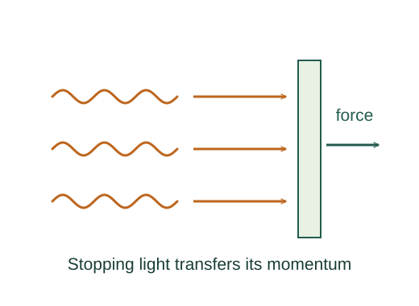

Derive radiation pressure from momentum transfer
Electromagnetic radiation transports momentum as well as energy. Pressure follows by counting how much normal momentum a surface receives per unit area and time.
What the symbols mean
I: incident time-average intensity; p: radiation pressure; c: vacuum light speed; A: illuminated area.
When this applies
Normally incident radiation on a stationary surface in vacuum. Compare a perfect absorber with a perfect specular reflector.

Relate radiation energy to momentum
A vacuum light pulse of energy ΔE carries momentum magnitude ΔE/c along its propagation direction. This follows from electromagnetic momentum or from the photon relation.
Go deeper at this stepWhy does a photon have p = E/c?Photon energy, momentum and the photoelectric effectFind the energy arriving per time
By definition of intensity, area A receives energy IA dt during time dt.
Stop the incoming momentum for absorption
A perfect absorber receives the entire incoming normal momentum. Divide its momentum gain by dt to obtain force, then by A to obtain pressure.
Reverse momentum for reflection
A reflected pulse leaves with equal momentum in the opposite normal direction. Its momentum change doubles, so the surface receives twice the absorbed-case impulse.
Where each equation comes from
Derived equations link to an argument below. Definitions, physical postulates and constitutive models are identified as the inputs of that argument.
Derivation of the main resultDerived result
Conditions: Normally incident radiation on a stationary surface in vacuum. Compare a perfect absorber with a perfect specular reflector.
- Relate radiation energy to momentum. A vacuum light pulse of energy ΔE carries momentum magnitude ΔE/c along its propagation direction. This follows from electromagnetic momentum or from the photon relation. Explain the equation used in step 1 ↗ Why does a photon have p = E/c? ↗
- Find the energy arriving per time. By definition of intensity, area A receives energy IA dt during time dt. Explain the equation used in step 2 ↗
- Stop the incoming momentum for absorption. A perfect absorber receives the entire incoming normal momentum. Divide its momentum gain by dt to obtain force, then by A to obtain pressure. Explain the equation used in step 3 ↗
- Reverse momentum for reflection. A reflected pulse leaves with equal momentum in the opposite normal direction. Its momentum change doubles, so the surface receives twice the absorbed-case impulse. Explain the equation used in step 4 ↗
Equation in step 1Derived result
What is being shown: Relate radiation energy to momentum
A vacuum light pulse of energy ΔE carries momentum magnitude ΔE/c along its propagation direction. This follows from electromagnetic momentum or from the photon relation.
Starting conditions and inputs: Normally incident radiation on a stationary surface in vacuum. Compare a perfect absorber with a perfect specular reflector.
Equation in step 2Derived result
What is being shown: Find the energy arriving per time
By definition of intensity, area A receives energy IA dt during time dt.
Earlier results used in this argument:
- Δpradiation = ΔE/c (Derived result)
Equation in step 3Derived result
What is being shown: Stop the incoming momentum for absorption
A perfect absorber receives the entire incoming normal momentum. Divide its momentum gain by dt to obtain force, then by A to obtain pressure.
Earlier results used in this argument:
- Δpradiation = ΔE/c (Derived result)
- ΔE = IA dt (Derived result)
Equation in step 4Derived result
What is being shown: Reverse momentum for reflection
A reflected pulse leaves with equal momentum in the opposite normal direction. Its momentum change doubles, so the surface receives twice the absorbed-case impulse.
Earlier results used in this argument:
- Δpradiation = ΔE/c (Derived result)
- ΔE = IA dt (Derived result)
- F = (IA dt/c)/dt = IA/c ⇒ p = I/c (Derived result)
A worked example
At I = 1000 W/m², perfect-absorption pressure is about 3.34 μPa and perfect-reflection pressure is about 6.67 μPa.
Derivation behind this calculation ↗A point to keep straight
At oblique incidence the normal momentum and illuminated geometry must be included. The displayed formulas apply to normal incidence.
Check the assumptions and derivation ↗